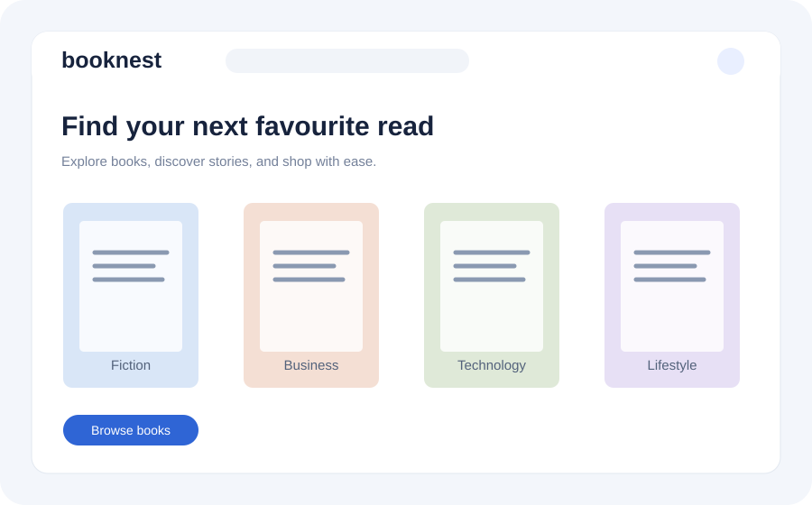
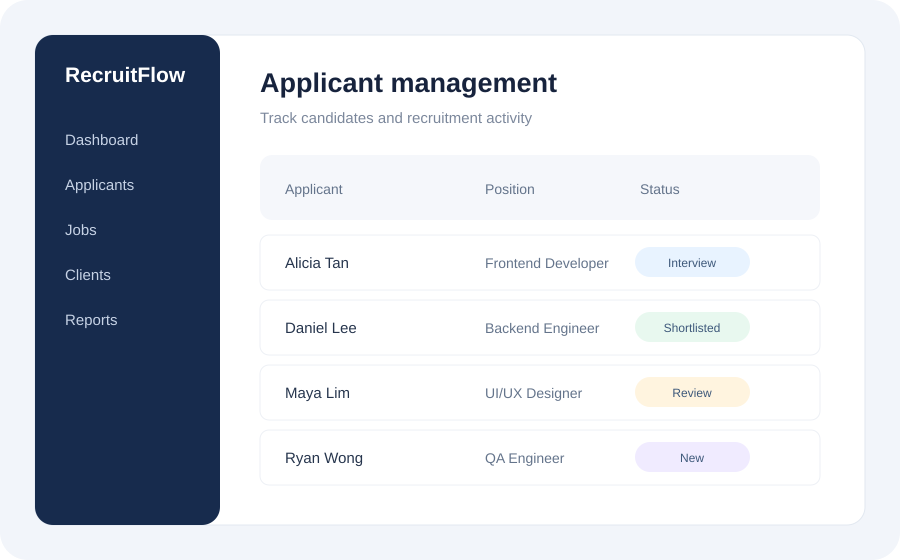
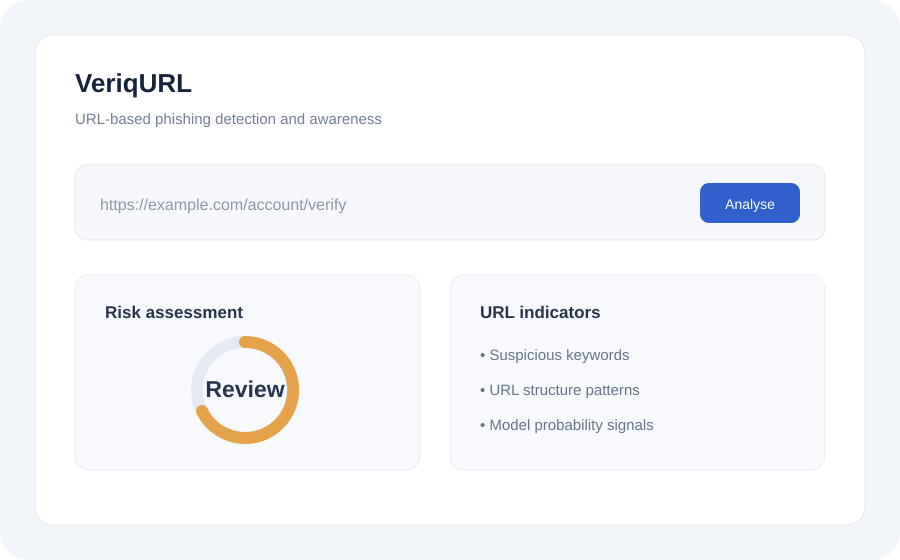

PHP · MYSQL01 / E-COMMERCE WEB APPLICATION
BookNest
A mini online bookstore with customer shopping flows and an administrator dashboard for managing books, orders and inventory.
Hello, I'm
I enjoy turning ideas into practical applications — from frontend interfaces to backend logic and database-driven features.

01 — ABOUT ME
I’m a Computer Science graduate from Multimedia University with a background in cybersecurity and hands-on experience building web applications.
During my internship, I worked on a recruitment management system using React, Node.js, Express and PostgreSQL. I have also built a PHP and MySQL online bookstore as an academic project. I’m now looking to grow as a web developer and contribute to real-world software projects.
02 — SELECTED WORK
A selection of academic and internship work across web development and applied machine learning.

PHP · MYSQLA mini online bookstore with customer shopping flows and an administrator dashboard for managing books, orders and inventory.

FULL-STACK INTERNSHIPA full-stack system supporting recruitment workflows, applicant records, file handling and role-based access.

FINAL YEAR PROJECTA lightweight URL-based phishing detection tool combining machine learning predictions with understandable risk explanations.
ⓘ Some internship project details are intentionally kept high-level to respect company confidentiality.
03 — TOOLKIT
Technologies I have used in projects, coursework or development experience.
Building interfaces and responsive layouts.
Application logic, APIs and server-side features.
Structuring, querying and managing application data.
Development workflow and applied computing.
I’m continuously strengthening my PHP and MySQL skills and expanding my practical web development experience.
04 — EXPERIENCE
Eternity Recruitment Sdn. Bhd.
Multimedia University · CGPA 3.80 / 4.00
Built a foundation in software development, databases, networking and cybersecurity through coursework and projects.